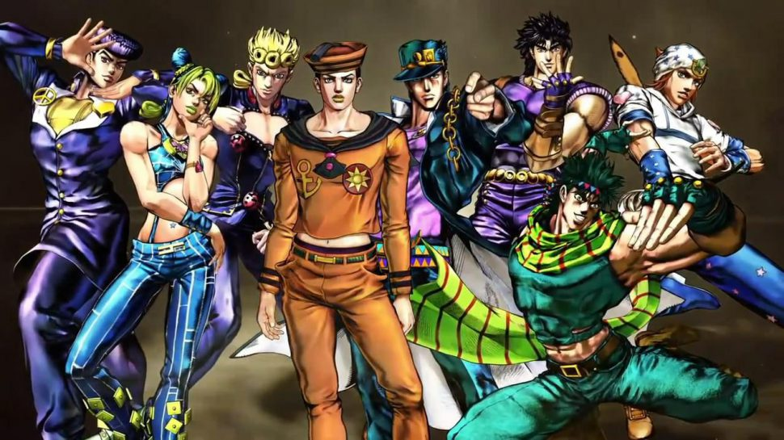
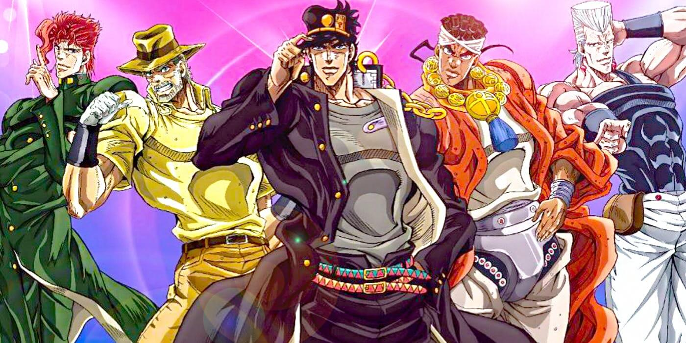
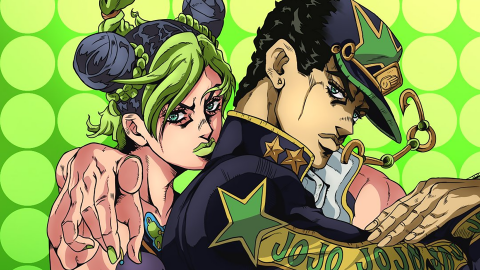
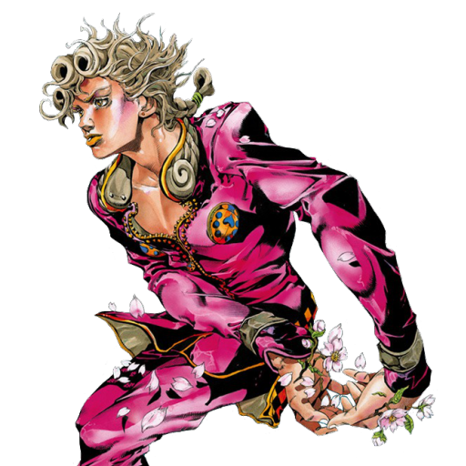

En tu tiempo de estadía, en este lugar encontraras toda información que tenga que ver con la franquicia de JoJos Bizarre Adventure; podrás conocer ms sobre el mangaka Araki Hirohiko, ideos entretenidos que halan sobre el anime, galería interactivas, los JOJOS de las 8 temporadas y mucho más, espero y sea de tu agrado.
JoJo's Bizarre Adventure (ジョジョの奇妙な冒険, JoJo no kimyō na bōken. En español seria traducido como "La Aventura Extraña de JoJo"; usualmente abreviada como JoJo o JJBA) es una serie manga shōnen y seinen escrita e ilustrada por Hirohiko Araki y la obra a la que está enteramente dedicada este sitio web.
JoJo's Bizarre Adventure fue serializada en la revista Shūkan Shōnen Jump desde 1987 hasta 2004, cuando luego fue
trasladada a la revista seinen Ultra Jump mensual, donde la historia continúa.
La serie tiene más de 100 millones de copias impresas, por lo que es una de las series manga más vendidas en la
historia. Extendiéndose por más de 120 volúmenes tankōbon (para un total de más de 20.000 páginas), es la
segunda serie manga de mayor duración de Shūeisha.
Los géneros que abarca se extienden por acción, aventura, sobrenatural, suspenso, comedia, tragedia, misterio y
terror.
Es quizás más conocida popularmente por su fenómeno Stand; el arco argumental Stardust Crusaders y sus
personajes Dio Brando y Jotaro Kujo; la interpretación expresiva de sus personalidades orgullosas glamorosas; y
sus cientos de referencias nominales a la música popular occidental.
Añadiendo al canon oficial de JoJo's Bizarre
Adventure en diversos grados, Araki ha sido autor de varios spin-off y artbooks relacionados; y además varias
novelas ligeras también se han producido, todas conteniendo ilustraciones
suyas.
Anteriormente era la serie manga más extensa de Shūeisha que todavía no había recibido una adaptación animada
para televisión y además de ser la menos conocida en occidente fuera de Japón hasta el año 2012. Anteriormente
el estudio A.P.P.P hizo una adaptación libre de la tercera parte Stardust Crusaders en formato OVA entre 1993,
1994, 2001 y 2002 y también hicieron la adaptación a película de la primera parte del manga Phantom Blood, per
recibio malas reseas y la pelicula desaparecio.
La serie anime oficial de televisión, finalmente hizo su debut el 6 de octubre de 2012 (que separa las fechas de
los debuts en manga y TV anime por un lapso de veinticinco años); diseñada por el estudio de animación David
Production habiéndose realizado hasta el momento cinco temporadas completas de las ocho tempradas existentes,
han adaptado cinco de las seis primeras partes del manga, con la adaptación de la sexta parte, Stone Ocean
confirmada en el año 2021, y salio ya el primer tomo, se espera que en abril salga la segunda parte de el sexto
arco con nuestra protagonista Jolyne Cujoh.
Muchas referencias a películas, televisión,
moda, bellas artes, y (en particular) la música popular de la época post-moderna son fácilmente identificables a
través de JoJo's Bizarre Adventure en muchos entornos y en ambos caracterización y nomenclatura del elenco. Los
ejemplos de teoría física, matemática y psicológica, además de biología, tecnología, mitología, fenómenos
naturales, acontecimientos históricos, y segmentos de otros trabajos artísticos informan el diseño y la
funcionalidad de la multitud de Stands únicos de JoJo's Bizarre Adventure. La serie de vez en cuando hace
desarrollos imaginarios sobre la teoría científica contemporánea en la creación de las rutas por las cuales
ciertos Stands y otros poderes ejercen su influencia en la naturaleza.
El primer arco llamado Battle Tendency tiene lugar en la Inglaterra de 1880 y se centra en la vida del joven Jonathan Joestar (apodado JoJo por sus iniciales). Este es un joven adinerado que vive con su padre George Joestar; quien adopta a otro chico para que sea el hermano de Jonathan.
Han pasado 49 años desde que Jonathan Joestar sacrificara su vida para acabar con Dio Brando, salvando la vida a su esposa Erina y a una bebé cuya madre murió asesinada durante la masacre provocada por Dio en el barco, y conocemos a nuestro segundo protagonista muy animado Joseph Joestar, que intenta derrotar a los hombres del pilar.
Jotaro es un estudiante japonés problemático muy dado a meterse en peleas en el instituto y a estar en contra de sus profesores. Pretenden encarcelarlo después de propinar una súper paliza a tres hombres armados y a un boxeador de asalto, pero quiere zafarse diciendo que está poseído por un espíritu maligno.
En Diamond is Unbreakable es Jotaro quien sucede a Joseph como la chispa que prende la trama. A Josuke le corresponde un tercio de la futura herencia del viejo Joestar, y el arco y la flecha creadores de portadores de Stands están en algún lugar incógnito de Morioh pero un asesino suelto con un stand.
Golden Wind comienza en 2001, Italia, un país gobernado por varias organizaciones de la mafia que venden drogas y, en general, dominan el mundo del crimen. La historia sigue a Giorno Giovanna, el hijo del villano Dio Brando.
Lucie, Florida, la historia sigue a la hija de Jotaro Kujo, Jolyne Kujo, quien es acusada de asesinato y termina en Green Dolphin Street Jail. Se le entrega un amuleto heredado de su padre, que le corta la mano y desbloquea su habilidad de Stand, Stone Free, que le permite desenredar su cuerpo en una cuerda viva.
Ambientada en 1890, está protagonizada por Gyro Zeppeli, un antiguo verdugo deshonrado, y Johnny Joestar, un ex jockey que recibió un disparo y perdió el uso de sus piernas, así como su fama y fortuna. Ellos, junto con otros, compiten en una carrera a través de todo Estados Unidos por 50 millones de dólares.
Cuando una estudiante universitaria local llamada Yasuho Hirose encuentra a un joven misterioso enterrado bajo uno de los Ojos de la Pared, inician su aventura juntos para tratar de ayudar al joven a recuperar los recuerdos de su vida momentos antes de que Yasuho lo descubriera.
Su gama de otras producciones incluyen varias
adaptaciones en vídeojuegos, incluyendo tres videojuegos de lucha publicados de manera internacional; JoJo's
Bizarre Adventure: Heritage for the Future desarrollado por Capcom (usando su placa CPS-3) en el año 1998;
JoJo's Bizarre Adventure: All-Star Battle desarrollado por Namco Bandai Games para la plataforma Sony
PlayStation 3 en el año 2014; y JoJo's Bizarre Adventure: Eyes of Heaven para la plataforma Sony PlayStation 4
en el año 2016, también desarrollado por Namco Bandai Games.